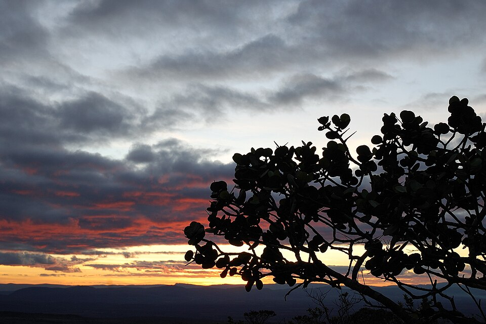

📷⭐ ImperdívelPrincipal
Morro do Pai Inácio
26 km · ~30–40 min · ✅ No roteiro
O cartão-postal da Chapada, e o ponto em que todas as fontes concordam sem ressalva. São 20 a 30 minutos de subida — íngreme em trechos, mas classificada como fácil — até uma vista de 360° com o Morro do Camelo e o Dois Irmãos. A subida só é liberada até as 17h e o sol se põe às 17h42, então a saída de Lençóis é às 16h15. A volta de 26 km pela BR-242 acontece no escuro, com o grupo junto: é a exceção que o grupo abriu à regra da luz do dia. A taxa de visitação é de R$ 20 por pessoa — subiu de R$ 12 em 06/04/2026, por decisão da Prefeitura de Palmeiras. São R$ 80 pelos quatro.